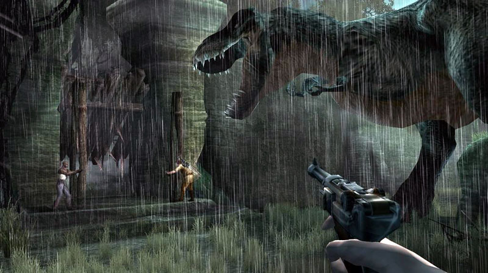
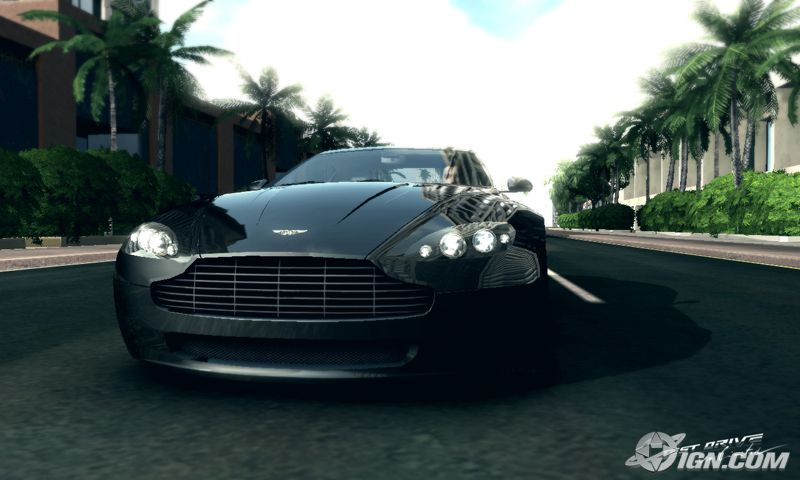

#5110 1 2005-11-10T19:12:20Z kai the new xbox 360 graphics...
...
*splurge*





soon it will be nearly impossible to tell game from reality. pretty soon VR will come in place....
....omg....i cant wait to see halo 3....IN VR!!!!!!!!
#113586 2 2005-11-10T20:02:45Z 7! Wow those graphics are amazing. 256 bit?
#113588 3 2005-11-10T20:12:53Z spect Wait some more, and you'll get a PC which can do the same and better....
I actually am not even THAT impressed by them: the rain on the first one doesn't look realistic and the background of the car looks pretty bad, I must say.
#113612 4 2005-11-10T21:24:28Z nevermore Are those in-game or cut-scene graphics?
I'm very impressed. Yeah, the rain looks unrealistic, and yeah, that background is somewhat half-assed, but the main parts of each scene (as in the dinosaur, the car itself, etc...) are mesmerizingly realistic. If course, if none of these are actually in-game shots, it's a bit less impressive.
#113619 5 2005-11-10T21:41:02Z Starcrossed Wait some more, and you'll get a PC which can do the same and better...
Spoken like a true PC fan..
Woo!
#113621 6 2005-11-10T21:42:39Z Baraba Hmmm...the dinosaur's jaws look paper thin. The dinosaur one is the worst of the bunch, and it looks to me like that's the only one showcasing actual gameplay. (considering the others are front-on view, which can't be gameplay) So, I'm not really all that impressed.
#113696 7 2005-11-11T03:01:03Z kyubbi238 PFt..x box 360...im waiting for the revolution VIVA LA REVOLUTION!!!! Those are cutscenes and i admit they are great graphics but the ps3 and revolution will be way better...one thing i think suks about one of the games on x box 360 isa racing game where they actualy put real people faces in and it looks absolutely dreadful but then again there will be great games for the x box...one momre thing..i dont know if any one has noticed this but the x box commercial are pointless and dont show off the 360 at all and if you ask me they need to tone it down to x box 180..lol...but then again halo 3 will come out on it wich is a great game but im waitng for the ps3 and revolution!!!!
#113764 8 2005-11-11T06:00:26Z Templex Meh. X-Boxes are PCs stuffed in a different box with some minor modifications.
#113777 9 2005-11-11T08:17:30Z monkey_man_5 Meh. X-Boxes are PCs stuffed in a different box with some minor modifications.
HOW DARE YOU!?
xbox rules!
#113780 10 2005-11-11T09:11:48Z ~$ib4lmaniac Meh. X-Boxes are PCs stuffed in a different box with some minor modifications.
HOW DARE YOU!?
xbox rules!
He's right though, and I don't see why that's an insult.
And I highly doubt those are cutscenes - they look far too bad for that!
And FYI the scenery in pgr3 is awesome.
#113787 11 2005-11-11T10:49:40Z KinGAleX That third one is the most realistic of the bunch. None of the others even look fit enough to be cutscenes. That first one looks quite tacky to me. The second looks almost cartoony!
#113803 12 2005-11-11T13:26:17Z astro I agree with templex, spect, and trib4l - xboxes are just glorified PCs with less expandability.
The Xbox 360 graphics are drool-worthy, though.
#113818 13 2005-11-11T13:55:59Z Lucidium I saw a couple xbox 360s in action when I was in Japan last week.
It's kinda worthless unless you run it on an HDTV. And even then, those screenshots are still quite deceptive. I was a bit dissapointed, to be honest.
They white plastic they've used is really horrible too. They haven't bothered to coat it with anything, so it's this matte finish that ends up looking really dirty. Even the display models they had about were really scuffed up.
On the other hand, the controllers are really nice, and I'm quite excited about the online capabilities.
#113944 14 2005-11-11T22:08:16Z kyubbi238 Meh. X-Boxes are PCs stuffed in a different box with some minor modifications.
HOW DARE YOU!?
xbox rules!
rules the world of poo...heh heh...im just kidding it looks pretty cool and all but WAAAAAAAAAAAAAAAYA TOOOOOOOOOOOOOOOOOOO MUCHA EXPEEENSIVA!!!...On the other hand the revolution and PS3 will SURPASS THE 360 BIGTIME!!!!!!!!!!!!!!
#113956 15 2005-11-11T22:54:57Z sweep And what's wrong with a glorified PC?
#113981 16 2005-11-12T00:52:48Z Atilla Feh. These graphics do not impress me. The first one, particularly, is terrible. And it's the only one that looks like actual gameplay...
(Has anyone seen Oblivion screens? I need a new graphics card!)
#114011 17 2005-11-12T03:39:19Z astro And what's wrong with a glorified PC?
Because you can't upgrade them, and all they do is play games (and DVDs, music, other media).
#114099 18 2005-11-12T11:05:20Z sweep And what's wrong with a glorified PC?
Because you can't upgrade them, and all they do is play games (and DVDs, music, other media).
Ah, so we're all agreed, it's better to have a computer than any console?
Good.
#114103 19 2005-11-12T11:13:39Z KinGAleX You might need a really good graphics card for a game on the computer though. There's no effing way my computer could run Half-life 2, and it's not too bad. With a console, it'll always play any game that comes its way. There are also many good titles for consoles that don't come out on the computer, or come out much later. i.e. San Andreas; Halo etc.
I'm not really taking a side on this, as I like both of them equally. I don't really use my computer for gaming though (other than N), as I prefer to use it a bit more socially.
#114111 20 2005-11-12T11:32:19Z astro Yeah, but at the expense of graphics. Xbox games right now are still locked into using the original Xbox's somewhat meagre specifications.
#114130 21 2005-11-12T12:46:54Z Red Reamer Consoles for friends.
Computer for yourself.
Who can be bothered setting up a lan?
And even then, its not as communal.
#114133 22 2005-11-12T12:56:08Z sweep Consoles for friends.
Computer for yourself.
Who can be bothered setting up a lan?
And even then, its not as communal.
I play network, and I also have 3/4 sidewinder controllers. That way, I can play people when they're on the otherside of the world, or equally I can play them in the same room.
Who said lan was a requirement?
#114180 23 2005-11-12T16:35:50Z glenno14 PCs are great. You need a good graphics card to fully enjoy the games on a PC though....
I have half life 2 and it looks terrible on my computer! I should post a screenshot of it sometime.
#114192 24 2005-11-12T17:38:46Z shoftee @Sweep:
No it's not a requirement, but it makes things much much easier... I think
 http://www.hamachi.cc/
http://www.hamachi.cc/
^ Neato program for Virtual LAN
#114923 25 2005-11-14T15:45:24Z ~$ib4lmaniac HL2 run's on just about anything. Looks terrible sometimes, but it usually runs!
#117119 26 2005-11-23T01:20:14Z Ender personally Im not a fan of the Xbox at all
I think that Sony is probally laughing at the Microsoft ompany beacuse they started work on the PS3 a year before Microsoft even started
#117123 27 2005-11-23T01:24:52Z GamingWolf Well I hope you're happy for the X-Box 360 has come out. *speaks to X-Box* I still don't know how you got obsessed with the original X-Box in the first place except for maybe Halo and online pay. Oh wait I already play good online games that I don't pay for. Just wait until next year...
#117148 28 2005-11-23T02:01:40Z Keron Cyst I played Call of Duty 2 on an Xbox 360 at a local Target.
...
PS3 will pwnz0r it.
#117250 29 2005-11-23T09:23:38Z ~$ib4lmaniac /me waits for the Revolution...
#117253 30 2005-11-23T09:38:49Z astro I'm not gonna say anything until I actually get to see them all in action.
#117310 31 2005-11-23T16:20:39Z Ender call of duty 2 was great but i havnt seen anything else that looks good yet
becides I dont see why they came out so soon
there will be a recall in a few months
#117661 32 2005-11-24T22:27:14Z Bigblargh I read that all small percentage of the new Xboxes were defective. The chairwoman said something like "machines the powerful and complex are bound to have errors" in defense. How silly. I remember the one before this had its wires crossing and catching on fire.
I'm a Nintendo person, so excuse me for being cynical. But good luck to M$ anyways.
#118202 33 2005-11-26T12:44:45Z tracco I don't know why anyone likes Halo.
I mean... It's shit.
you ask people what they liked about it, and they say, "OH OH TEH GRAPIHX R SO FANTASTIQU!!!!111" and then you tell them you think the graphics are shit, bland and completely uninteresting, because they really are, and they say, "OH OH BTU LUK AT TEH GRAZZ0RZ LOL" and it looks like a steam rooler played the game 5 minutes before you.
ANYWAY!
Who the hell cares about graphics? OH RIGHT, silly me, everyone does.
But those graphics look... Well... They look shit.
[Edit]Sorry about swearing, I forgot this wasn't bash n' thrash... So I took some out
#118203 34 2005-11-26T12:48:58Z sweep Oh, come on, anyone who thinks those graphics looks "shit" is either an idiot or just saying that because it's Microsoft.
#118231 35 2005-11-26T14:53:06Z tracco I'm partially saying it's just because it's microsoft, and other...ly, I'm saying it because I really don't think wax figures look realistic. If you look closely, they're almost cubes with highly detailed bump maps all over them, and from the videos I have seen of the 360... They really aren't great.
#118288 36 2005-11-26T21:36:41Z brickman I don't think its a big deal at all. Woot, it makes slightly more realistic graphics, it has the RAM for slightly more physics, and you're going to pay a mint for it. The games are not going to change, you're still going to be playing the same stuff as you did on every other system in the last few years with a facelift. Truely good games, the genre-rocking games that get cults behind them and are still remembered 10 years later, have never, ever been caused by hardware improvements. Its the software that counts, and the software is going to be the same at best and may very well follow the worriesome trend of putting even more of their staff on "box art" (aka graphics, physics and anything they can stick a large number onto) and fewer on making the games fun. Stick with PCs, where there's always going to be someone concentrating on gameplay no matter how much the giants put into graphics, and where YOU choose when its time to update instead of letting them tell the entire gaming world that its now time to update and if you don't RIGHT NOW you won't be able to get anything, even if it doesn't really require the resources of the new system, and all your games aren't going to work on your new rig but they'll sell you the sequel with more of the same gameplay for another 50 or 60 dollars (not to mention that when everyone upgrades at the same time to the same thing they've got a bottleneck for extreme gouging, while PCs regularly cycle and if you try to get whatever the newest PC today is a month from now you'll pay half of what they'll still be charging for the Xbox 360).
To those who point out that you need updated equipment to play PC games, I'll point out that you don't. You can play new games on hardware a year and a half old and probably use the highest settings, and I'm not sure how many PCs there are still out there that couldn't do at least something with Half Life two, even if it doesn't look pretty or run fast without upgrades. Wheras new games coming out now will not work on Xboxes that were top of the line until only weeks ago. And in response to the "console exclusives" or "long wait for Halo" arguements, it works both ways--Half Life two has been out for quite a while and is just getting ported to the consoles, sans multiplayer too.
And as a side note, other than the two other people I think my computer (which is not high end by any standards) has seen stuff as good as that first pic on half life two (and you know that's the only one that actually represents gameplay), and the gun looks worse than anything in HL2 to boot. And while the car does look true to life, I see no reason our computers couldn't handle the other two--at least in cutscenes, which is what they are.
#118295 37 2005-11-26T22:20:37Z Templex The thing that interests me the most is that according to Wikipedia, the PS3 will technically have 28.8 GHz of PowerPC computing power (
Wikipedia PowerPC article).
And that all of the consoles will use the PowerPC processor.
#119615 38 2005-12-01T21:57:12Z 3Gav Acctually, the first game, King Kong, isnt an only 360 game, its just xbox, so thats why.
I would get this before a PC because its not just the grafics i want, its the gameplay.
The grafics are the best yet so whoever says they suck is just prejudicing microsoft, or their standards are unable to be met.
the final picture and car have amazing grafics, esspecially in the last one

I like the last one
#119768 39 2005-12-02T08:53:19Z ~$ib4lmaniac The 360 was released today in the UK. It's been out for 8 hours and 53 minutes so far.
#119814 40 2005-12-02T15:09:33Z Teedle [QUOTE]The grafics are the best yet[QUOTE]
Isn't a 'grafic' a type of south african bird?
Good to know that Microsoft have the best birds included in their latest console. Very good indeed.
#119817 41 2005-12-02T15:36:19Z ~$ib4lmaniac Good to know that Microsoft have the best birds included in their latest console. Very good indeed.
Yeah, but this is Microsoft remember. You have to buy the "Ornithologist Package" to use these features

#119869 42 2005-12-02T20:38:24Z 3Gav whatever they still own you